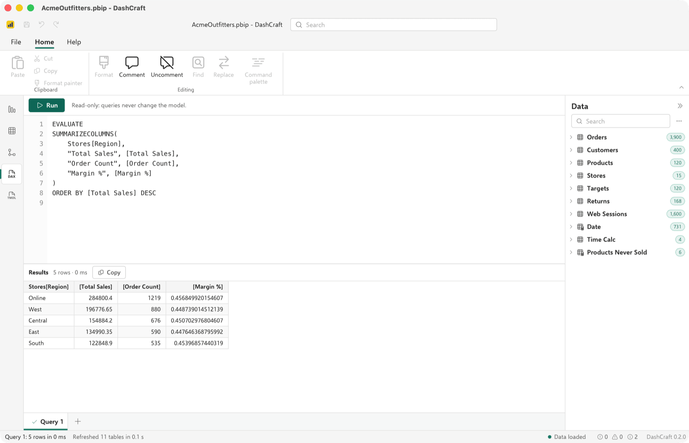

Draft translation: please check it with a native speaker before release.
यह पेज OCR डेमो का हिस्सा है। स्थिति: MVP।
किसी ऐप का स्क्रीनशॉट भी पाठ है। यहाँ क्वेरी एडिटर पंक्ति-दर-पंक्ति पढ़ा जाता है, इसलिए किसी कॉलम या माप के नाम की खोज इस पेज को ढूँढ लेती है।

तालिका को पाठ की पंक्तियों की तरह पढ़ा जाता है। उसके सेल खोज से मिलते हैं, पर तालिका की संरचना अभी सुरक्षित नहीं रहती।
श्रेय: DashCraft परियोजना के स्क्रीनशॉट, उसके MIT या Apache-2.0 लाइसेंस के तहत। डेटा काल्पनिक है।